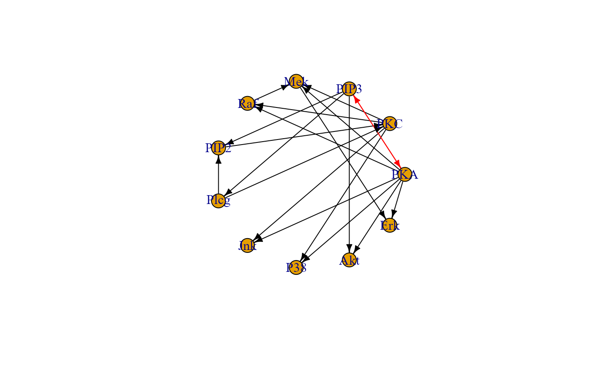

Convert a model, specified using lavaan syntax, to a graph object in either igraph or dagitty format.
lavaan2graph( model, directed = TRUE, psi = TRUE, format = "igraph", verbose = FALSE, ... )
Arguments
| model | Model specified using lavaan syntax. |
|---|---|
| directed | Logical value. If TRUE (default), edge directions from the model will be preserved. If FALSE, the resulting graph will be undirected. |
| psi | Logical value. If TRUE (default) covariances will be converted into bidirected graph edges. If FALSE, covariances will be excluded from the output graph. |
| format | Output graph format. It can be either "igraph" (default) or "dagitty". |
| verbose | Logical value. If TRUE, a plot of the output graph will be generated. For large graphs, this could significantly increase computation time. If FALSE (default), graph plotting will be disabled. |
| ... | Currently ignored. |
Value
An igraph object.
Author
Mario Grassi mario.grassi@unipv.it
Examples
# Writing path diagram in lavaan syntax model<-' #path model Jnk ~ PKA + PKC P38 ~ PKA + PKC Akt ~ PKA + PIP3 Erk ~ PKA + Mek Mek ~ PKA + PKC + Raf Raf ~ PKA + PKC PKC ~ PIP2 + Plcg PIP2 ~ PIP3 + Plcg Plcg ~ PIP3 #PKA ~ 1 #PIP3 ~ 1 # (co)variances # PIP2 ~~ PIP3 ' # Graph with covariances G0 <- lavaan2graph(model, psi = TRUE) plot(G0, layout = layout.circle)